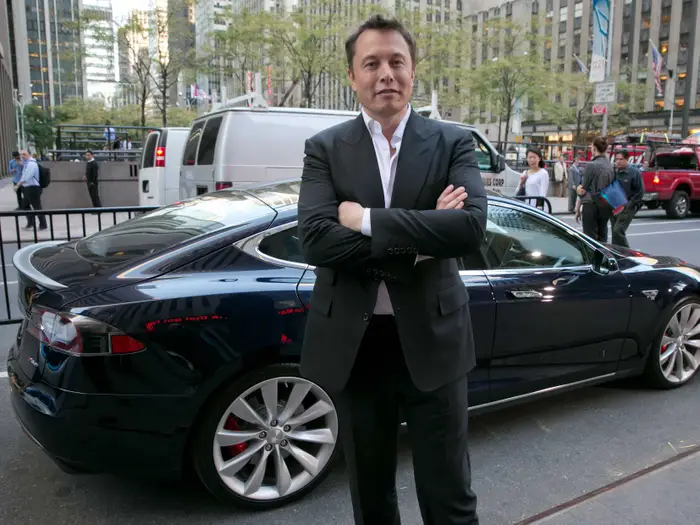
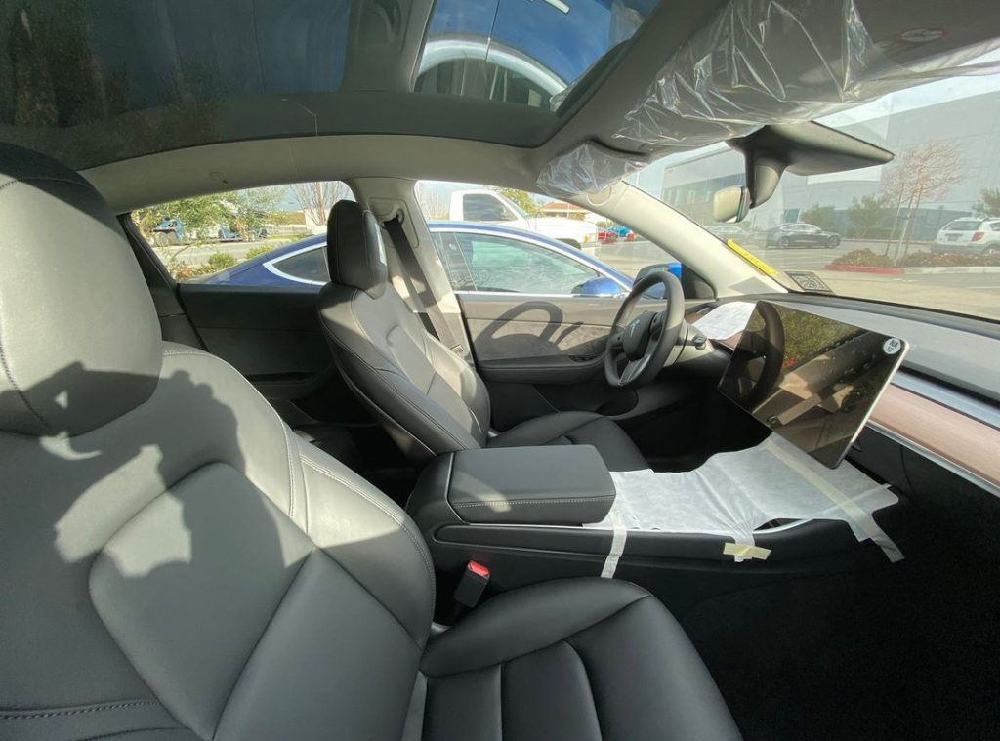
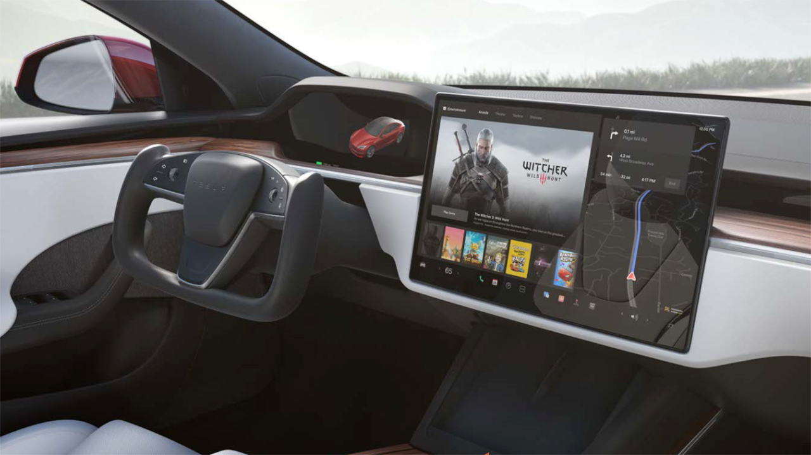
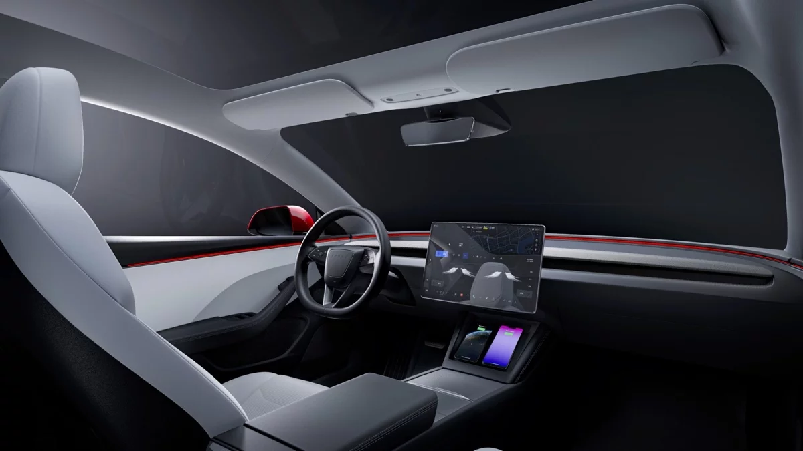

|  | Elon Musk ha una lunga storia con Tesla, che inizia con il suo coinvolgimento iniziale nell'azienda nel 2004. Musk non è stato il fondatore di Tesla, ma è diventato un investitore importante e presidente del consiglio di amministrazione poco dopo la sua fondazione. Il suo interesse per Tesla è stato inizialmente guidato dalla sua visione di accelerare la transizione verso veicoli elettrici per ridurre l'impatto ambientale. Sotto la sua leadership, Tesla ha sviluppato e lanciato una serie di veicoli elettrici di successo, tra cui il Roadster, il Model S, il Model X, il Model 3 e il Model Y. Musk ha svolto un ruolo chiave nel plasmare la strategia dell'auto. 'azienda e nello sviluppo di tecnologie innovative, tra cui i sistemi di guida assistita e la rete di stazioni di ricarica Supercharger. Elon Musk è noto per le sue dichiarazioni audaci sul futuro dell'energia elettrica e della mobilità sostenibile, oltre ad essere un sostenitore della colonizzazione di Marte attraverso la sua azienda SpaceX. La sua visione e il suo coinvolgimento con Tesla hanno contribuito a rendere l'azienda un leader nell'industria automobilistica e a spingere l'adozione dei veicoli elettrici a livello globale. |
Ecco alcuni interni delle nostre auto:
|  | Ecco un interno di una MODEL Y |
|  | Ecco un interno di una MODEL S |
|  | Ecco un interno di una MODEL 3 |
Ecco uno speed test di una Tesla Model S(0-100 in 1.9secondi):
Premi qui sotto per tornare alla home page